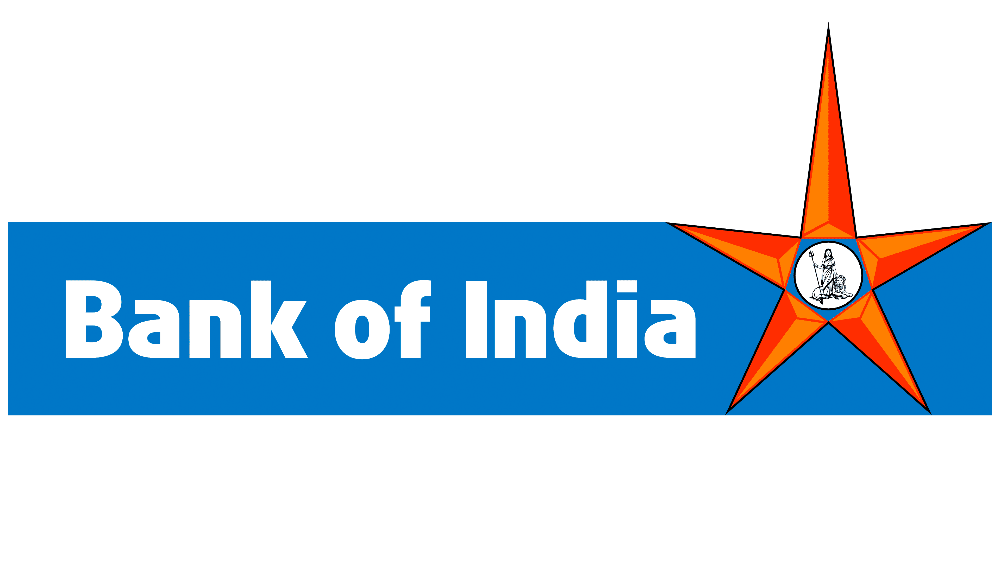

Bank of India
Bank of India (BOI) is an Indian nationalised bank. It is under the ownership of Ministry of Finance, Government of India with headquarters in Bandra Kurla Complex, Mumbai. Founded in 1906, it has been government-owned since nationalisation in 1969. BoI is a founder member of SWIFT (Society for Worldwide Inter Bank Financial Telecommunications), which facilitates provision of cost-effective financial processing and communication services. As on 31 March 2021, Bank of India's total business stands at ₹1,037,549 crore (US$140 billion),[3] has 5,108 branches and 5,551 ATMs around the world (including 24 overseas branches).[3]
History
Bank of India was founded on 7 September 1906 by a group of eminent businessmen from Mumbai, Maharashtra, India. The Bank was under private ownership and control till 19 July 1969 when it was nationalised along with 13 other banks.[5] Beginning with one office in Mumbai, with a paid-up capital of ₹5 million (US$66,000) and 50 employees, the Bank has made a rapid growth over the years and blossomed into a mighty institution with a strong national presence and sizable international operations. In business volume, the Bank occupies a premier position among the nationalised banks. The bank has over 5,084 branches in India spread over all states and union territories including specialized branches. These branches are controlled through 54 zonal offices. There are 60 branches, 5 subsidiaries, and 1 joint venture abroad. The Bank came out with its maiden public issue in 1997 and follow on Qualified Institutions Placement in February 2008.[5]
latest
The board of Bank of India is examining the possibility of merger with other banks, based on the synergy in business According to Dinabandhu Mohapatra, managing director and chief executive officer said on 17 September 2017 that the bank is in the process of strengthening its systems and processes before exploring merger possibilities.